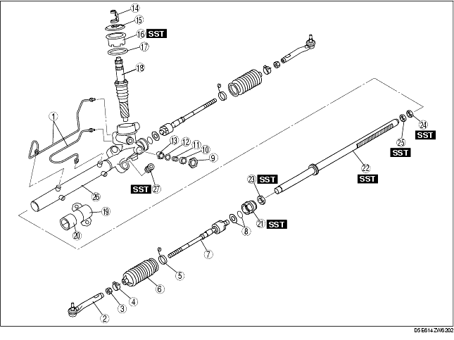
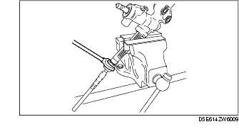
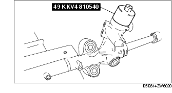
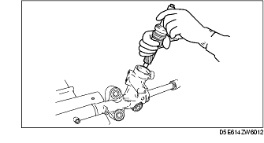
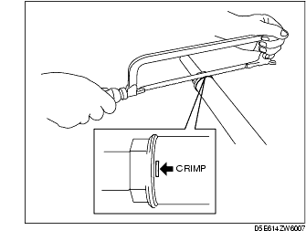
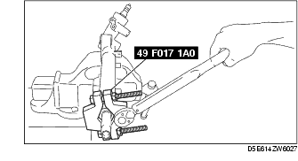
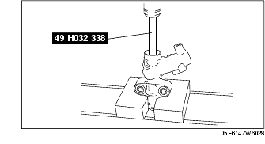
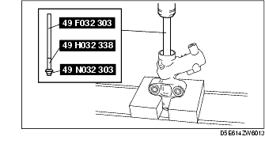
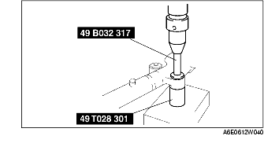

Workshop Manual ➭ STEERING ➭ POWER STEERING ➭ STEERING GEAR AND LINKAGE DISASSEMBLY
STEERING GEAR AND LINKAGE DISASSEMBLY
id061400801000
{: #wp1059776}
Caution
• Place copper plates, rag, or similar material in a vise, when securing the mounting bracket portion of the steering gear.
- Disassemble in the order indicated in the table.{: #wp1059794}

|
Oil pipe {: #wp1059835} |
|
|---|---|
|
2 {: #wp1059873} |
Tie-rod end {: #wp1059876} |
|
3 {: #wp1059880} |
Locknut {: #wp1059883} |
|
4 {: #wp1059919} |
Boot clamp {: #wp1059922} |
|
5 {: #wp1059936} |
Boot band {: #wp1059939} |
|
6 {: #wp1059953} |
Boot {: #wp1059956} |
|
7 {: #wp1059970} |
Tie rod {: #wp1059973} (See Tie Rod Disassembly Note.) {: #wp1059989} |
|
8 {: #wp1060001} |
Lock washer and o-ring {: #wp1060004} |
|
9 {: #wp1060021} |
Locknut (adjusting cover) {: #wp1060024} |
|
10 {: #wp1060040} |
Adjusting cover {: #wp1060043} |
|
11 {: #wp1060059} |
Yoke spring {: #wp1060062} |
|
12 {: #wp1060078} |
Washer {: #wp1060081} |
|
13 {: #wp1060097} |
Support yoke {: #wp1060100} |
|
14 {: #wp1060116} |
Clip {: #wp1060119} |
|
15 {: #wp1060135} |
Dust cover {: #wp1060138} |
|
16 {: #wp1060154} |
Pinion plug {: #wp1060157} (See Pinion Plug, Pinion Shaft Component Disassembly Note.) {: #wp1060175} |
|
17 {: #wp1060187} |
O-ring {: #wp1060190} |
|
18 {: #wp1060209} |
Pinion shaft component {: #wp1060212} (See Pinion Plug, Pinion Shaft Component Disassembly Note.) {: #wp1060232} |
|
19 {: #wp1060244} |
Mounting bracket {: #wp1060247} |
|
20 {: #wp1060267} |
Mounting rubber {: #wp1060270} |
|
21 {: #wp1060290} |
Holder {: #wp1060293} (See Holder Disassembly Note.) {: #wp1060315} |
|
22 {: #wp1060327} |
Steering rack {: #wp1060330} (See Steering Rack, Oil Seal (Holder Side) Disassembly Note.) {: #wp1060354} |
|
23 {: #wp1060366} |
Oil seal (holder side) {: #wp1060369} (See Steering Rack, Oil Seal (Holder Side) Disassembly Note.) {: #wp1060395} |
|
24 {: #wp1060407} |
Inner guide {: #wp1060410} (See Oil Seal (Gear Housing Side), Inner Guide Disassembly Note.) {: #wp1060438} |
|
25 {: #wp1060450} |
Oil seal (gear housing side) {: #wp1060453} (See Oil Seal (Gear Housing Side), Inner Guide Disassembly Note.) {: #wp1060483} |
|
26 {: #wp1060495} |
Gear housing {: #wp1060498} |
|
27 {: #wp1060528} |
Mounting rubber {: #wp1060531} (See Mounting Rubber Disassembly Note.) {: #wp1060563} |
Tie Rod Disassembly Note
-
Unclamp the washer.
-
Remove the tie rod.{: #wp1060633}

Pinion Plug, Pinion Shaft Component Disassembly Note
- Remove the clip and the dust cover, then remove the pinion plug using the SST.{: #wp1060670}

- Remove the pinion shaft component from the gear housing.{: #wp1060716}

Holder Disassembly Note
- Remove the crimp from the holder and cylinder ends using a hacksaw.{: #wp1060753}

- Remove the holder using the SST.{: #wp1060780}

Steering Rack, Oil Seal (Holder Side) Disassembly Note
-
Install the SST to the gear housing.
-
Remove the steering rack and oil seal (holder side) using a press.{: #wp1060845}

- Remove the oil seal (holder side) from the steering rack.
Oil Seal (Gear Housing Side), Inner Guide Disassembly Note
-
Set the SSTs as shown.
-
Install the SST to the gear housing.
-
Remove the oil seal (gear housing side) and inner guide using a press.{: #wp1060930}

Mounting Rubber Disassembly Note
• Press the mounting rubber out from the gear housing using the SSTs and a press.
